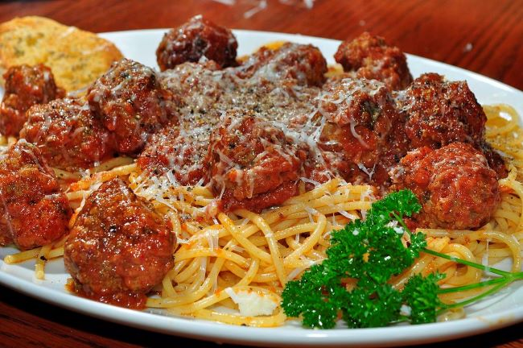

Meatballs
These homemade meatballs will make yuo look like a professional chef infront of your guests 👩🏻🍳 This recipe is good for four portions.
| Ingredients: | Preparation: | Tips: |
|---|---|---|
|
|
Serving
For evenly-sized meatballs that will cook in the same amount of time, pat the meat mixture into a 6x4-inch square. Cut into 24 squares. Roll each square into a ball. Serve with spaghetti!  Subscribe to get more recipes on your email: nyheter@marleneskoek.com |